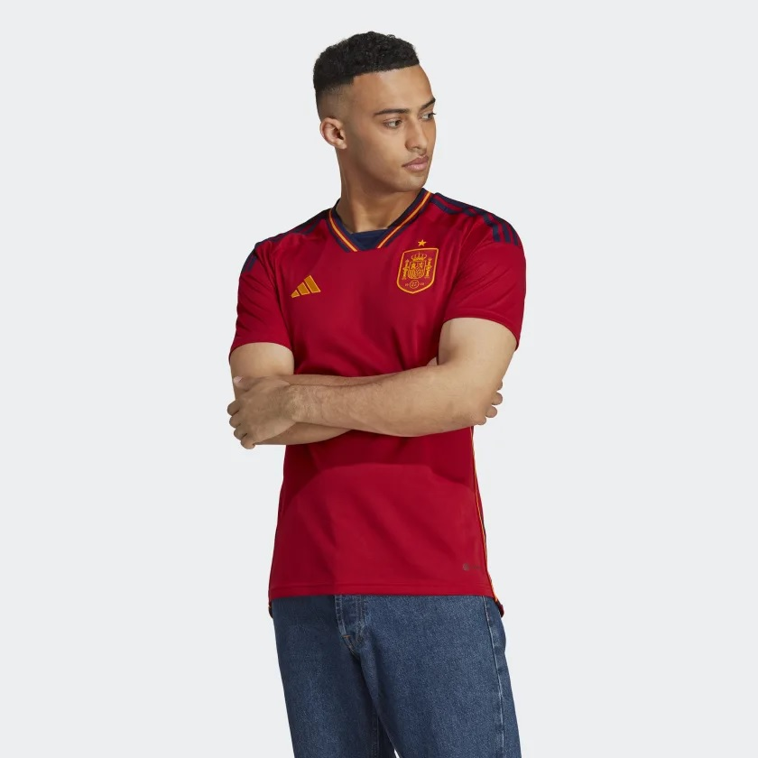

Thông tin áo đấu

Áo đấu sân nhà của Đội tuyển Tây Ban Nha thường có màu đỏ và vàng, với các đường kẻ đứng mỏng trên áo. Áo có cổ tròn và có thể có các chi tiết trang trí như logo của nhà tài trợ hoặc của đội bóng.
Hiện tại, Adidas là nhà sản xuất áo đấu chính thức cho Đội tuyển Tây Ban Nha. Áo đấu mới nhất của Tây Ban Nha có thiết kế khá đơn giản và thanh lịch, với ba sọc ngang màu đỏ, vàng và đỏ trên áo. Áo cũng có logo của Adidas và của Hiệp hội bóng đá Tây Ban Nha.
Bạn có thể tìm thấy thông tin chi tiết và hình ảnh về áo đấu sân nhà của Đội tuyển Tây Ban Nha trên trang web của Adidas hoặc trên các cửa hàng thể thao trực tuyến.